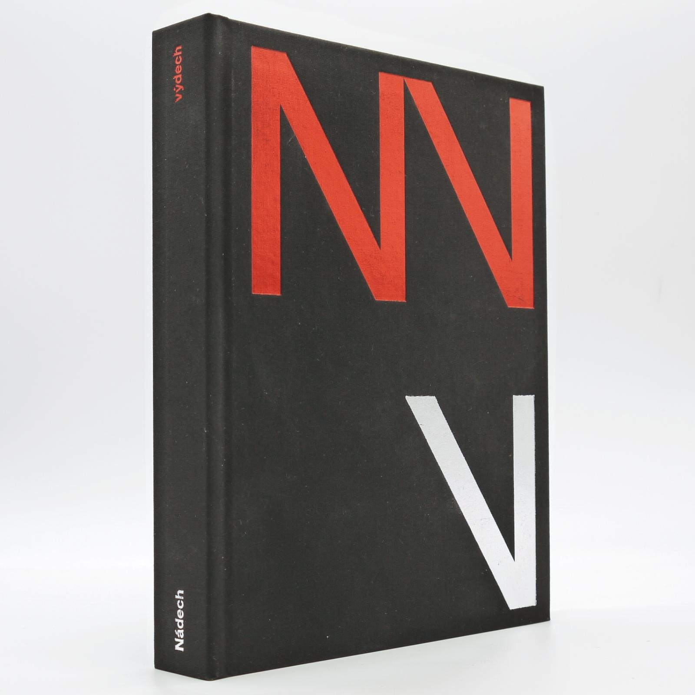
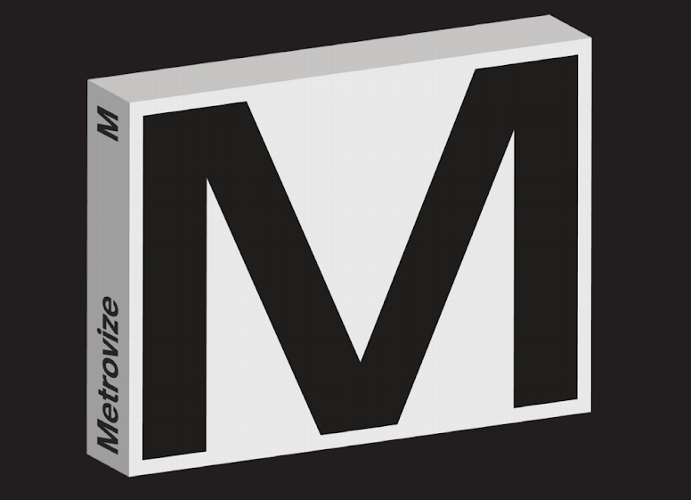
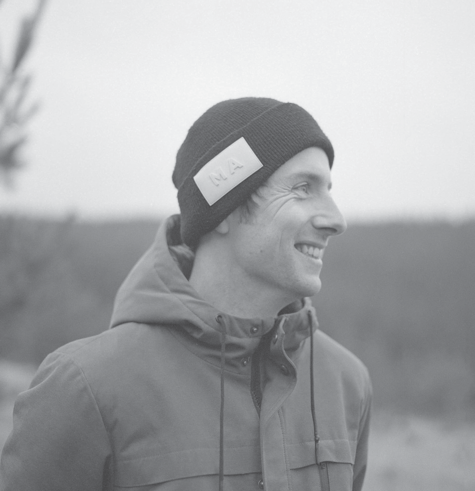
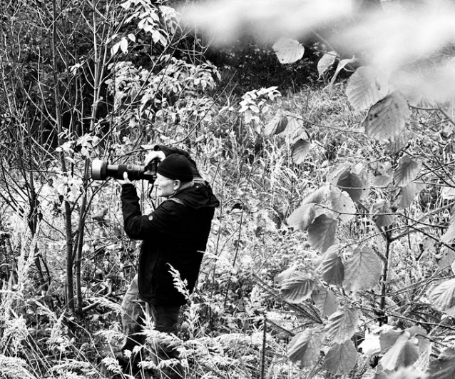

Tvůrčí tým.

Jan Charvát
Autor a publicistaPublicista, dokumentarista a autor vizuálně i obsahově výjimečných knižních projektů. Dlouhá léta působil jako člen kultovního pražského uměleckého a vydavatelského uskupení BiggBoss a podílel se na trilogii Kmeny.
Je autorem oceňovaných knih Nádech výdech (2017) o architektuře vzduchotechniky pražského metra a Metrovize (2019). Svůj precizní přístup k rešerším získal během novinářské kariéry – začínal v ČTK, působil jako investigativní reportér v Českém rozhlase 1 (Radiožurnál) se specializací na tajné služby a armádu, a následně jako reportér a dramaturg v pořadu Fakta České televize.

Nádech výdech
Vzduchotechnika metra (2017)

Metrovize
Architektura pražského metra (2019)

Jan Matoušek
Grafický designEtablovaný pražský grafický designér, typograf a držitel prestižního ocenění Czech Grand Design (2019). Je absolventem pražské UMPRUM, prošel Studiem Najbrt a Laboratoří. Tvořil identity pro Národní filmový archiv, festival Den architektury či Laternu magiku.
Pro knihu MOSTY navrhuje zcela unikátní koncept. Grafické řešení se neomezuje na suché sázění fotografií, ale reflektuje grafickou poezii vlakových jízdních řádů a technických výkresů.
„Mosty pro mě nejsou jen dopravní stavby, ale rytmus, linie a konstrukce, které chceme přenést přímo do samotné struktury stránek a vazby.“

Pavel Hroch
Dokumentární fotografieRenomovaný dokumentární fotograf a vizuální kronikář s mimořádně širokým záběrem – fotografoval v Mexiku, Rusku, na Kubě i v Afghánistánu. Vystavoval mimo jiné ve Sněmovně reprezentantů USA ve Washingtonu. S autorem Janem Charvátem ho pojí společná minulost v ČTK.
Milovníkům architektury je známý jako dvorní fotograf úspěšných knih historika Zdeňka Lukeše (Skrytá krása detailu, Praha moderní) a autorským albem Pustým městem (2020). V projektu MOSTY zachycuje atmosféru a genia loci železničních staveb zasazených do krajiny.

Jan Třeštík
FotografieLegendární český fotograf, jehož rukopis definuje hluboký kontrast a cit pro syrovou výpověď černobílé fotografie. V letech 1997–2002 působil jako osobní fotograf prezidenta Václava Havla, kterého doprovázel od Bílého domu po Vatikán (kniha Prezidentovi v patách).
S Janem Charvátem a J. Matouškem tvoří úspěšný tvůrčí triumvirát díky knize Nádech výdech. Do knihy MOSTY přináší zkušenosti s prací se světlem v industriálním prostředí.
„Jeho doménou je monumentálnost. Tam, kde ostatní vidí obyčejný viadukt, dokáže najít nadčasovou siu lidského umu a dramatickou hru světla.“